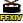
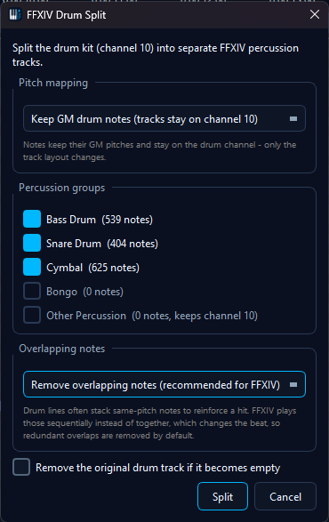
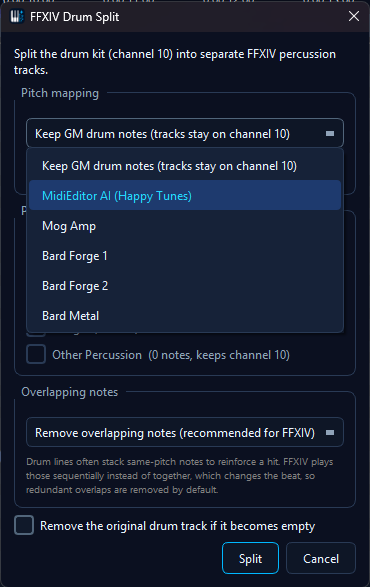
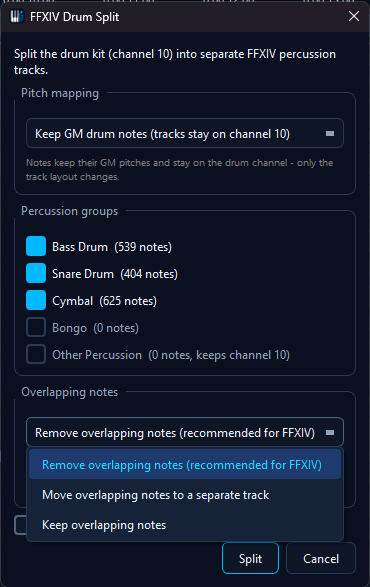

FFXIV Drum SplitThe FFXIV Drum Split tool turns a General MIDI drum track into FFXIV percussion tracks with one click. A typical imported MIDI packs the whole drum kit - kick, snare, toms, hi-hats, cymbals - onto a single track on the drum channel (channel 10). This tool splits that track into separate, correctly named FFXIV instrument tracks, and can optionally transpose the drums onto the pitches of a community drum kit so the percussion is instantly playable in game.
💡 Find it in: Toolbar button or menu Tools → FFXIV drum split
How It Works
1️⃣ Select the drum track
The tool works on the current edit track (the track selected in "Add new events to"). It scans the track's notes on the drum channel.
2️⃣ Preview
A dialog shows each FFXIV percussion group with the number of notes it will receive from this file. Untick any group you want to leave alone.
3️⃣ Split
One click creates the new tracks right below the source track and moves the drum notes onto them. The whole operation is a single undo step.

The Percussion Groups
FFXIV bard performance has five percussion instruments: Bass Drum, Snare Drum, Cymbal, Bongo and Timpani. The drum split groups the General MIDI drum notes into matching tracks (Timpani is a tonal instrument with its own track and channel, so it is not part of the drum-channel split):
| New Track | Receives (GM drums) |
|---|---|
| Bass Drum | Kick drums and all toms (FFXIV has no dedicated tom - the toms live on the Bass Drum's pitch range) |
| Snare Drum | Snares, side stick, hand clap |
| Cymbal | Hi-hats, crash, ride, splash and china cymbals |
| Bongo | Bongos, congas, timbales |
| Other Percussion | Everything without an FFXIV equivalent - tambourine, cowbell, agogo, woodblocks, whistles, triangle, shakers and friends. Kept on its own track so you can decide what to do with it. |
The new tracks keep all events on the drum channel - the split only changes the track layout. Because the track names match the FFXIV percussion instruments, playback and audio export automatically use the matching FFXIV sound for each track when the FFXIV SoundFont is active.
Pitch Mapping Kits
The Pitch mapping selector at the top of the dialog controls what happens to the note pitches:
| Selection | What It Does | Best For |
|---|---|---|
| Keep GM drum notes (default) |
Pure track split - every note keeps its GM pitch. The FFXIV sound comes from the track name. | Tidying up a drum track, preparing a file for further manual editing |
| MidiEditor AI (Happy Tunes) | The app's house kit: kicks and toms shifted up onto the Bass Drum's range, snares onto the Snare Drum's upper range, crash cymbals anchored on an editing convention - low crashes on C5, china on F#5, high crashes on C6 - and bongos/congas on the Bongo instrument. Hi-hats and rides are deliberately left unmapped and land in "Other Percussion", because rhythm cymbals rarely translate 1:1 into FFXIV - decide per song what to keep. | A ready-to-play starting point that leaves the song-dependent decisions to you |
| Mog Amp Bard Forge 1 Bard Forge 2 Bard Metal |
Splits and transposes every drum onto the selected kit's target pitch - kicks and toms are tuned across the Bass Drum's range, snares, cymbals and bongos land on their kit notes. Drums the kit does not map (hi-hats and rides, for example) stay untouched in "Other Percussion". | Making the percussion instantly playable in game with a community drum kit |
🎵 The tracks stay on the drum channel in both modes. In FFXIV playback the track name picks the percussion instrument, so the note pitch is free to carry the kit's tuning.
Kit Note Tables
Click a kit to see its complete GM-drum-to-pitch mapping:
MidiEditor AI (Happy Tunes) - full note mapping
| FFXIV Track | GM Drum (source) | Target Pitch |
|---|---|---|
| Bass Drum | 35 - Kick 2 (Acoustic Bass Drum) | 60 (C4) |
| 36 - Kick 1 (Bass Drum 1) | 60 (C4) | |
| 41 - Low Floor Tom | 65 (F4) | |
| 43 - High Floor Tom | 67 (G4) | |
| 45 - Low Tom | 69 (A4) | |
| 47 - Low-Mid Tom | 71 (B4) | |
| 48 - High-Mid Tom | 72 (C5) | |
| 50 - High Tom | 74 (D5) | |
| Snare Drum | 38 - Snare 1 (Acoustic) | 72 (C5) |
| 40 - Snare 2 (Electric) | 72 (C5) | |
| Cymbal | 49 - Crash 1 | 72 (C5) |
| 52 - China Cymbal | 78 (F#5) | |
| 57 - Crash 2 | 84 (C6) | |
| Bongo | 60 - Hi Bongo | 70 (A#4) |
| 61 - Low Bongo | 67 (G4) | |
| 62 - Mute Hi Conga | 72 (C5) | |
| 63 - Open Hi Conga | 65 (F4) | |
| 64 - Low Conga | 74 (D5) |
Not mapped (stays in "Other Percussion" on the drum channel): hi-hats (42/44/46), rides (51/53/59), splash (55) and all remaining GM percussion - rhythm cymbals are a per-song editing decision.
Mog Amp - full note mapping
| FFXIV Track | GM Drum (source) | Target Pitch |
|---|---|---|
| Bass Drum | 35 - Kick 2 (Acoustic Bass Drum) | 55 (G3) |
| 36 - Kick 1 (Bass Drum 1) | 57 (A3) | |
| 41 - Low Floor Tom | 63 (D#4) | |
| 43 - High Floor Tom | 66 (F#4) | |
| 45 - Low Tom | 70 (A#4) | |
| 47 - Low-Mid Tom | 73 (C#5) | |
| 48 - High-Mid Tom | 77 (F5) | |
| 50 - High Tom | 80 (G#5) | |
| Snare Drum | 38 - Snare 1 (Acoustic) | 67 (G4) |
| 40 - Snare 2 (Electric) | 69 (A4) | |
| Cymbal | 49 - Crash 1 | 71 (B4) |
| 52 - China Cymbal | 69 (A4) | |
| 55 - Splash Cymbal | 77 (F5) | |
| 57 - Crash 2 | 71 (B4) | |
| Bongo | 60 - Hi Bongo | 70 (A#4) |
| 61 - Low Bongo | 67 (G4) |
Not mapped: hi-hats (42/44/46), rides (51/53/59), congas (62-64) and all remaining GM percussion.
Bard Forge 1 - full note mapping
| FFXIV Track | GM Drum (source) | Target Pitch |
|---|---|---|
| Bass Drum | 35 - Kick 2 (Acoustic Bass Drum) | 48 (C3) |
| 36 - Kick 1 (Bass Drum 1) | 51 (D#3) | |
| 41 - Low Floor Tom | 56 (G#3) | |
| 43 - High Floor Tom | 58 (A#3) | |
| 45 - Low Tom | 60 (C4) | |
| 47 - Low-Mid Tom | 62 (D4) | |
| 48 - High-Mid Tom | 51 (D#3) | |
| 50 - High Tom | 53 (F3) | |
| Snare Drum | 38 - Snare 1 (Acoustic) | 62 (D4) |
| 40 - Snare 2 (Electric) | 64 (E4) | |
| Cymbal | 49 - Crash 1 | 73 (C#5) |
| 52 - China Cymbal | 76 (E5) | |
| 55 - Splash Cymbal | 79 (G5) | |
| 57 - Crash 2 | 81 (A5) | |
| Bongo | 60 - Hi Bongo | 60 (C4, unchanged) |
| 61 - Low Bongo | 61 (C#4, unchanged) |
Not mapped: hi-hats (42/44/46), rides (51/53/59), congas (62-64) and all remaining GM percussion.
Bard Forge 2 - full note mapping
| FFXIV Track | GM Drum (source) | Target Pitch |
|---|---|---|
| Bass Drum | 35 - Kick 2 (Acoustic Bass Drum) | 53 (F3) |
| 36 - Kick 1 (Bass Drum 1) | 55 (G3) | |
| 41 - Low Floor Tom | 58 (A#3) | |
| 43 - High Floor Tom | 61 (C#4) | |
| 45 - Low Tom | 65 (F4) | |
| 47 - Low-Mid Tom | 68 (G#4) | |
| 48 - High-Mid Tom | 71 (B4) | |
| 50 - High Tom | 74 (D5) | |
| Snare Drum | 38 - Snare 1 (Acoustic) | 64 (E4) |
| 40 - Snare 2 (Electric) | 66 (F#4) | |
| Cymbal | 49 - Crash 1 | 71 (B4) |
| 52 - China Cymbal | 69 (A4) | |
| 55 - Splash Cymbal | 77 (F5) | |
| 57 - Crash 2 | 71 (B4) | |
| Bongo | 60 - Hi Bongo | 70 (A#4) |
| 61 - Low Bongo | 67 (G4) |
Not mapped: hi-hats (42/44/46), rides (51/53/59), congas (62-64) and all remaining GM percussion.
Bard Metal - full note mapping
| FFXIV Track | GM Drum (source) | Target Pitch |
|---|---|---|
| Bass Drum | 35 - Kick 2 (Acoustic Bass Drum) | 59 (B3) |
| 36 - Kick 1 (Bass Drum 1) | 60 (C4) | |
| 41 - Low Floor Tom | 62 (D4) | |
| 43 - High Floor Tom | 64 (E4) | |
| 45 - Low Tom | 66 (F#4) | |
| 47 - Low-Mid Tom | 68 (G#4) | |
| 48 - High-Mid Tom | 69 (A4) | |
| 50 - High Tom | 71 (B4) | |
| Snare Drum | 38 - Snare 1 (Acoustic) | 68 (G#4) |
| 39 - Hand Clap | 84 (C6) | |
| 40 - Snare 2 (Electric) | 68 (G#4) | |
| Cymbal | 49 - Crash 1 | 78 (F#5) |
| 57 - Crash 2 | 81 (A5) | |
| Bongo | 60 - Hi Bongo | 70 (A#4) |
| 61 - Low Bongo | 67 (G4) | |
| 62 - Mute Hi Conga | 72 (C5) | |
| 63 - Open Hi Conga | 65 (F4) | |
| 64 - Low Conga | 74 (D5) |
Not mapped: hi-hats (42/44/46), rides (51/53/59), china (52), splash (55) and all remaining GM percussion.

Demo
Options
- Include checkboxes - untick a group and its notes stay where they are (or flow into "Other Percussion" when that group is ticked)
- Other Percussion - collects every drum note the mapping does not cover, plus any other events on the drum channel, so nothing is ever silently dropped
- Overlapping notes - drum lines often stack same-pitch notes to reinforce a hit, and a pitch-mapping kit can also land two GM drums (e.g. both kicks) on the same target pitch. FFXIV can only sound one at a time, so stacked hits play sequentially and change the beat. Per output track and pitch, the split keeps the earliest note of each overlapping cluster (when several start together, the longest - then loudest - hit wins) and either removes the rest (default, recommended), moves them to a separate "Overlaps" track, or keeps everything. The "Overlaps" track is created muted - it is a holding pen for reviewing what was pulled out, not part of the arrangement.
- Remove the original drum track if it becomes empty - deletes the source track after the split, but only when no events would be lost (time signatures, lyrics and other meta events on the track always keep it alive)

Undo & Re-running
- The entire split is a single undo action - press Ctrl+Z to restore the original drum track exactly
- Splitting a track that is itself the product of a previous drum split (a track named Bass Drum, Snare Drum, Cymbal, Bongo or Other Percussion) asks for confirmation first - with a kit selected, a second pass could re-map notes that are already on their kit pitches
Tips
- Split first, fine-tune after - the new tracks are ordinary tracks; move, delete or edit notes freely once the split is done
- Pick the kit that matches your in-game setup - the kits differ in where kicks, toms and cymbals land; choose the one your performance group uses
- Combine with Fix X|V Channels - run the channel fixer afterwards to set up the rest of the arrangement; it recognizes the new percussion tracks by name
- Watch the voice budget - dense cymbal patterns eat FFXIV voices quickly; the Voice Limiter shows the load per lane